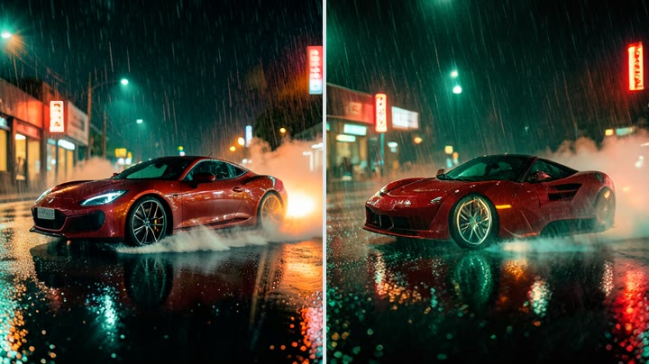
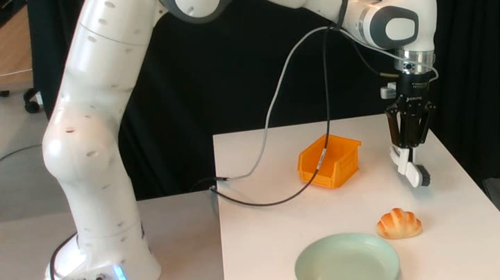
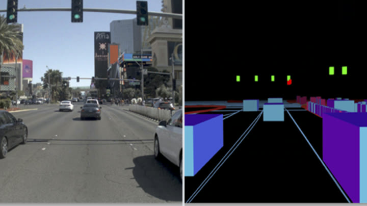
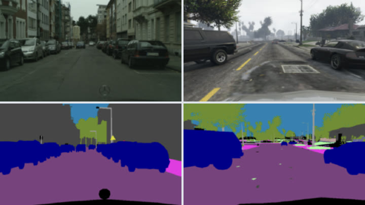
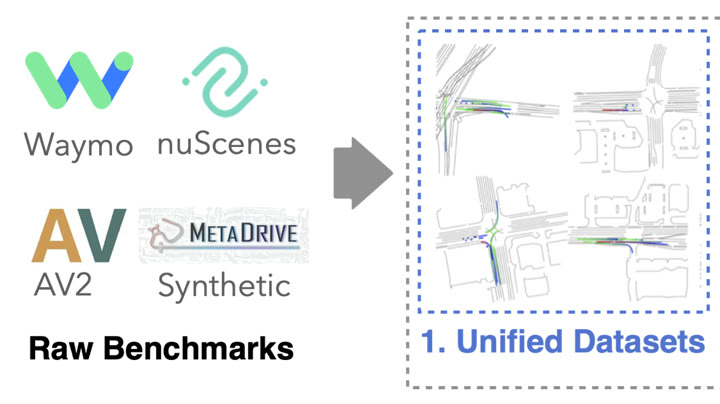
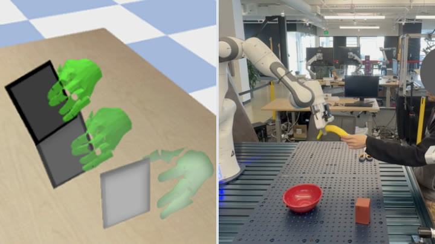
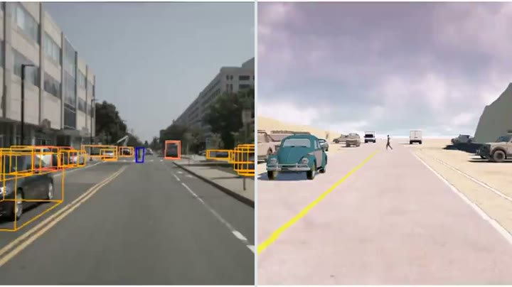

I work on generative models and world models for physical AI. Physical AI is limited by the cost of the experience it learns from, and my research lowers that cost. RDM turns the four-step FLUX.2 [klein] into a one-step model that beats it on GenEval (0.826 vs 0.794). PTD, from my NVIDIA internship, distills the 33B audio-video model MiniMax-H3 to four steps with LoRA alone, cutting sampling time for a five-second clip from 343 s to 31 s. On the data side, TAROT chooses which data is worth training on.
Advised by Prof. Alexandre Alahi. Research intern at NVIDIA Research since June 2026. First or co-first author at ICLR 2026, ICML 2025 and ECCV 2024.
Open to research internships in 2027
I am a PhD candidate at EPFL, Switzerland, working with Prof. Alexandre Alahi at the VITA Lab. Before EPFL I received my M.Sc. in Robotics, Systems and Control from ETH Zurich and B.E. in Navigation Engineering from Wuhan University.
I have built synthetic training data for physical AI since before my PhD. For my master's thesis at the AIT Lab, ETH Zurich, with Prof. Otmar Hilliges and NVIDIA, I trained human-to-robot handover policies on synthetic hand-object motions (SynH2R). Earlier, with Prof. Bolei Zhou at UCLA, I worked on generative simulation for reinforcement learning.
My current research makes generation itself cheap. RDM trains one-step generators by matching feature distributions under frozen encoders, and turns the four-step FLUX.2 [klein] into a one-step model that beats its teacher. PTD, from my internship at NVIDIA Research, distills the 33B audio-video model MiniMax-H3 into a four-step generator with LoRA alone; its videos are more diverse and more natural than those from DMD-style distillation, at matching motion quality. On the data side, TAROT (ICML 2025) selects training data with optimal transport, and RAP (ICLR 2026) shows that policies can be trained on cheap 3D rasterizations instead of photorealistic renders. I have also worked on minute-scale human animation (EverAnimate, NeurIPS 2026) and on world models that let a robot plan toward goals given in language (Grounded World Model).
Next, I am combining these into world models that are fast enough for closed-loop training and that generate the situations a policy fails on. I am looking for a research internship in 2027, and I am open to collaborations on these topics.
* equal contribution. Full list on Google Scholar.

Teacher, 4 stepsRDM, 1 step
“Pick up the tool used to clean shoes”
Camera3D rasterization
Target, CityscapesNearest GTA5 frame

Synthetic human motionReal robot
Real-world logReplayed in simulationThe best way to reach me is by email at lan.feng@epfl.ch. I am based in Zurich, Switzerland. I also use X/Twitter and LinkedIn.
I am especially interested in collaborating on: (i) one- and few-step image and video generation, (ii) world models that generate training experience for physical AI, and (iii) choosing which data to generate and train on.